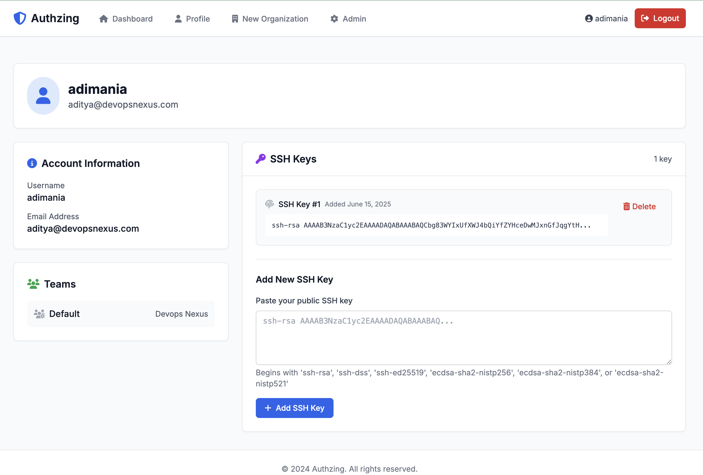
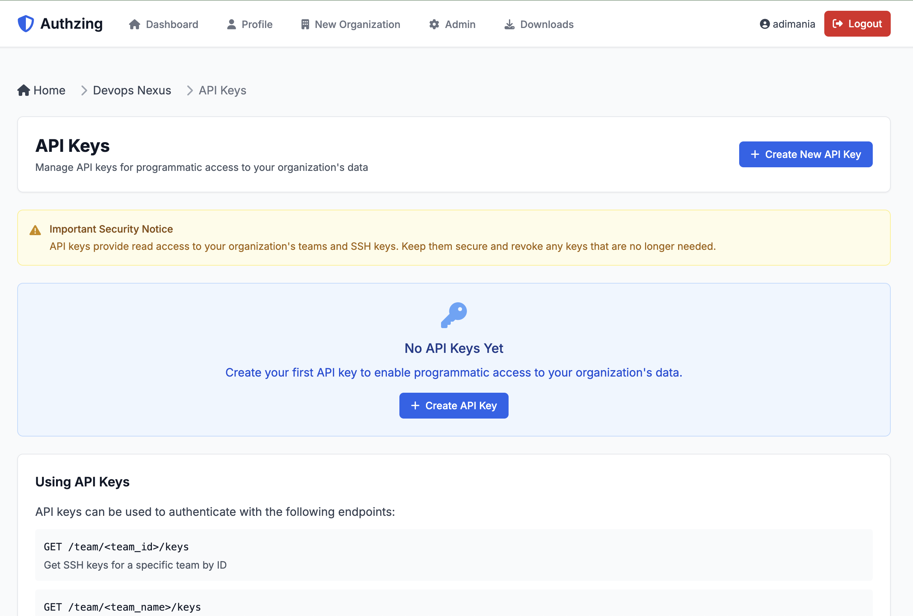
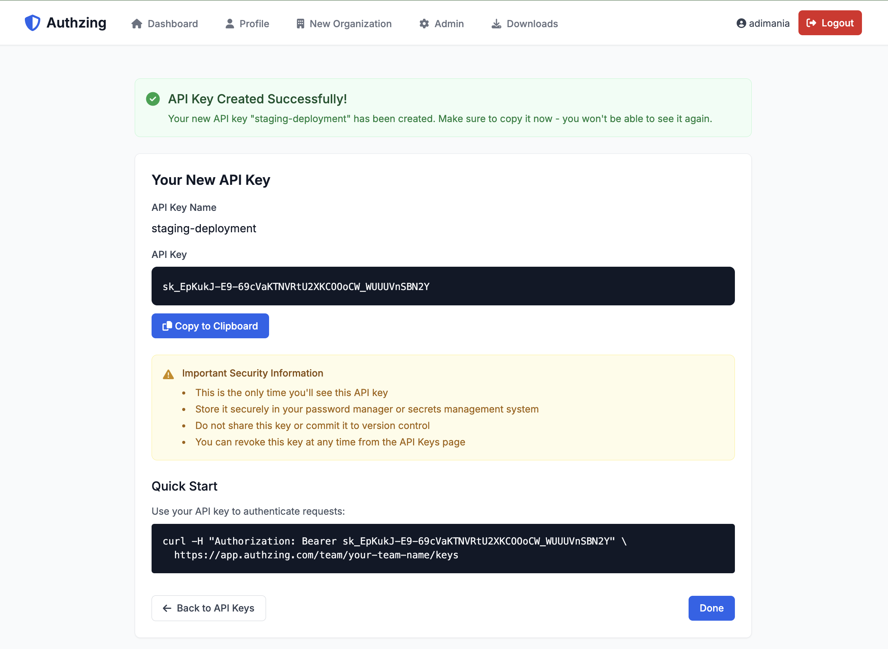

Authzing User Guide
Welcome to Authzing! This guide will help you get started with managing SSH access for your team using our web dashboard and Linux agent.
Table of Contents
- Using the Dashboard
- Getting Started
- Managing Your Profile
- Organization Administration
- Setting up the Servers
- Getting Your API Key
- Installation Methods
- Configuration
- Managing the Service
Using the Dashboard
Getting Started
Creating Your Account
- Navigate to the Authzing login page
- Click on "Sign Up" to create a new account
- Fill in your username, email, and password
- Click "Sign Up" to complete registration
Logging In
- Enter your username and password
- Click "Login" to access your dashboard
Managing Your Profile
Adding SSH Keys
SSH keys are essential for secure server access. Here's how to add your SSH key:
- Click on "Profile" in the navigation menu
- Locate the "SSH Keys" section
- Paste your public SSH key in the text field
- Click "Add SSH Key"
[Screenshot placeholder: Profile page with SSH key section]
Finding your SSH key:
# If you have an existing SSH key
cat ~/.ssh/id_rsa.pub
# If you need to generate a new SSH key
ssh-keygen -t rsa -b 4096 -C "your-email@example.com"
Managing Your SSH Keys
- View all your SSH keys in the profile page
- Each key shows when it was added
- Click "Delete" to remove keys you no longer use

Organization Administration
If you're an organization admin, you have additional capabilities to manage teams and members.
Creating an Organization
- Click "New Organization" in the navigation menu
- Enter your organization name
- Click "Create Organization"
Inviting Team Members
- Navigate to your organization page
- Click "Invite Member"
- Enter the email address of the person you want to invite
- Click "Send Invitation"
The invited user will receive an email with instructions to join your organization.
Creating and Managing Teams
Teams help you organize members and control their server access:
- From your organization page, click "Create New Team"
- Enter a team name (e.g., "developers", "contractors")
- Click "Create Team"
Adding Members to Teams
- Navigate to the team you want to manage
- Click "Manage Members"
- Select users from your organization
- Click "Update Team Members"
Managing API Keys
API keys allow the Linux agent to authenticate with Authzing:
- Go to your organization page
- Click "API Keys"
- Click "Create New API Key"
- Give your key a descriptive name (e.g., "Production Servers")
- Important: Copy the API key immediately - it won't be shown again!
 
Viewing Login Activity
Monitor who's accessing your servers:
- From your organization page, click "Login Activity"
- View recent logins with details:
- Username
- Server hostname
- Login time and duration
- IP address
You can filter by: - Username - Server name - Date range
Setting up the Servers
Getting Your API Key
Before installing the agent on your servers, you need an API key:
- Log in to the Authzing dashboard
- Navigate to your organization
- Click "API Keys"
- Create a new API key or use an existing one
- Copy the key (format:
sk_...)
[Screenshot placeholder: API keys page showing where to copy the key]
Installation Methods
Choose the installation method that best fits your system:
Method 1: Package Installation (Recommended)
For Debian/Ubuntu systems:
# Download the .deb package
wget https://github.com/yourusername/authzing/releases/download/linux-agent-v1.0.0/authzing-linux-agent_1.0.0_amd64.deb
# Install the package
sudo dpkg -i authzing-linux-agent_1.0.0_amd64.deb
# The service is installed but not started
For RHEL/Rocky Linux/Fedora systems:
# Download the .rpm package
wget https://github.com/yourusername/authzing/releases/download/linux-agent-v1.0.0/authzing-linux-agent-1.0.0-1.el9.x86_64.rpm
# Install the package
sudo rpm -i authzing-linux-agent-1.0.0-1.el9.x86_64.rpm
# The service is installed but not started
Method 2: Binary Installation
For systems where packages aren't available:
# Download the binary archive
wget https://github.com/yourusername/authzing/releases/download/linux-agent-v1.0.0/authzing-agent-1.0.0-linux-amd64.tar.gz
# Extract the archive
tar -xzf authzing-agent-1.0.0-linux-amd64.tar.gz
# Copy binary to system path
sudo cp authzing-agent /usr/bin/
sudo chmod +x /usr/bin/authzing-agent
# Copy the example config
sudo cp authzing.yaml.example /etc/authzing.yaml
Configuration
Basic Configuration
Edit the configuration file at /etc/authzing.yaml:
# Authzing Linux Agent Configuration
api_key: sk_your_api_key_here
# Optional: Disable TLS verification for testing
# WARNING: Only use this with self-signed certificates in test environments
# insecure: false
# Teams to sync
teams:
- name: developers
sudo: true # Members can use sudo
- name: contractors
sudo: false # Members cannot use sudo
Advanced Configuration
Using environment variables:
# Override API key via environment variable
export AUTHZING_API_KEY="sk_your_api_key_here"
# Use custom API endpoint (for self-hosted instances)
export AUTHZING_API_URL="https://authzing.company.com"
Command line options:
# Use a custom config file location
authzing-agent -config /path/to/config.yaml
# Show version information
authzing-agent -version
# Disable TLS verification (testing only)
authzing-agent -insecure
Managing the Service
Systemd Service File
If you installed via binary, create /etc/systemd/system/authzing-agent.service:
[Unit]
Description=Authzing Linux Agent
Documentation=https://github.com/yourusername/authzing
After=network.target
[Service]
Type=simple
User=root
ExecStart=/usr/bin/authzing-agent
Restart=always
RestartSec=30
StandardOutput=journal
StandardError=journal
SyslogIdentifier=authzing-agent
# Security settings
NoNewPrivileges=true
PrivateTmp=true
ProtectSystem=strict
ProtectHome=true
ReadWritePaths=/home /etc/passwd /etc/group /etc/shadow /etc/sudoers.d /var/lib/authzing /var/log
[Install]
WantedBy=multi-user.target
Starting the Service
# Reload systemd to recognize the new service
sudo systemctl daemon-reload
# Enable the service to start on boot
sudo systemctl enable authzing-agent
# Start the service
sudo systemctl start authzing-agent
# Check service status
sudo systemctl status authzing-agent
Monitoring the Agent
View logs:
# View recent logs
sudo journalctl -u authzing-agent -n 50
# Follow logs in real-time
sudo journalctl -u authzing-agent -f
# View logs from the last hour
sudo journalctl -u authzing-agent --since "1 hour ago"
Log file location:
The agent also writes to /var/log/authzing.log
Troubleshooting
Service won't start: 1. Check the configuration file syntax 2. Verify the API key is correct 3. Ensure network connectivity to app.authzing.com 4. Check logs for specific errors
Users not being created: 1. Verify the team name in config matches dashboard exactly 2. Check that users have SSH keys added in their profile 3. Review agent logs for sync errors
SSH access not working:
1. Ensure the user's SSH key is correctly formatted
2. Check /home/username/.ssh/authorized_keys exists
3. Verify SSH daemon is running and configured correctly
How It Works
The Authzing Linux Agent:
- Syncs every 5 minutes with the Authzing API
- Creates local users for team members
- Updates SSH keys in
~/.ssh/authorized_keys - Manages sudo access via
/etc/sudoers.d/ - Tracks login activity and reports to dashboard
Security Considerations
- The agent requires root privileges to manage users
- API keys should be kept secure and rotated regularly
- Use TLS verification in production (don't use
-insecure) - The agent only creates users, never deletes them
- SSH keys are synced, but existing keys are replaced
Next Steps
- Add your SSH key to your profile
- Join or create teams
- Install the agent on your servers
- Monitor access through the dashboard
For additional help:
- Check the FAQ
- Review API documentation
- Contact support at support@authzing.com